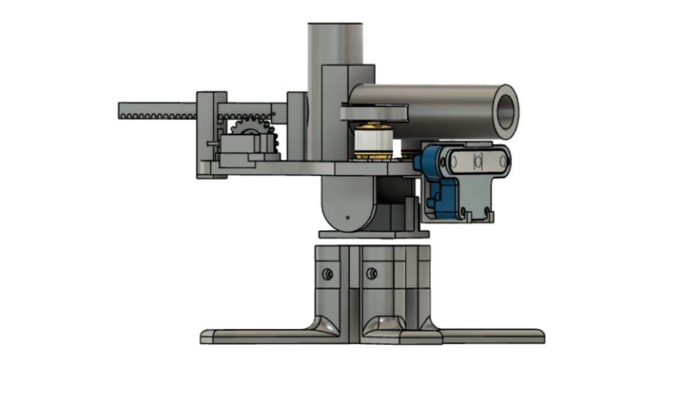

Developed an autonomous turret that detects and tracks a moving person, aligns in real time, and launches foam balls through a coordinated perception-to-actuation system.

The system includes an AI-based tracking layer that detects a moving person and outputs directional commands for aiming. Two servo motors provide yaw and pitch movement for 2‑DOF positioning. The shooting mechanism uses two BLDC motors for launching and a rack-and-pinion feeder for loading foam balls into the barrel. An embedded controller synchronizes tracking, aiming, loading, and firing actions in real time.
Servo motors were chosen for yaw and pitch because they provide precise angular control with simple integration. BLDC motors were selected for consistent projectile speed. A rack-and-pinion mechanism separated loading from firing for better repeatability. The control logic was structured so the turret could only fire when alignment conditions were satisfied.
The main challenges included maintaining accurate alignment during rapid target motion, reducing backlash-related aiming error, synchronizing loading with launcher speed, managing vibration from BLDC motors, preventing misfeeds, and coordinating multiple actuators without jitter.
The final turret achieved stable two-axis target tracking, synchronized loading and launching, repeatable foam-ball firing with controlled alignment, and a fully integrated perception-to-actuation mechatronic system.